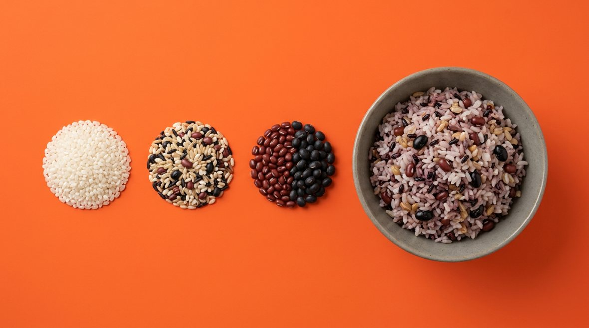
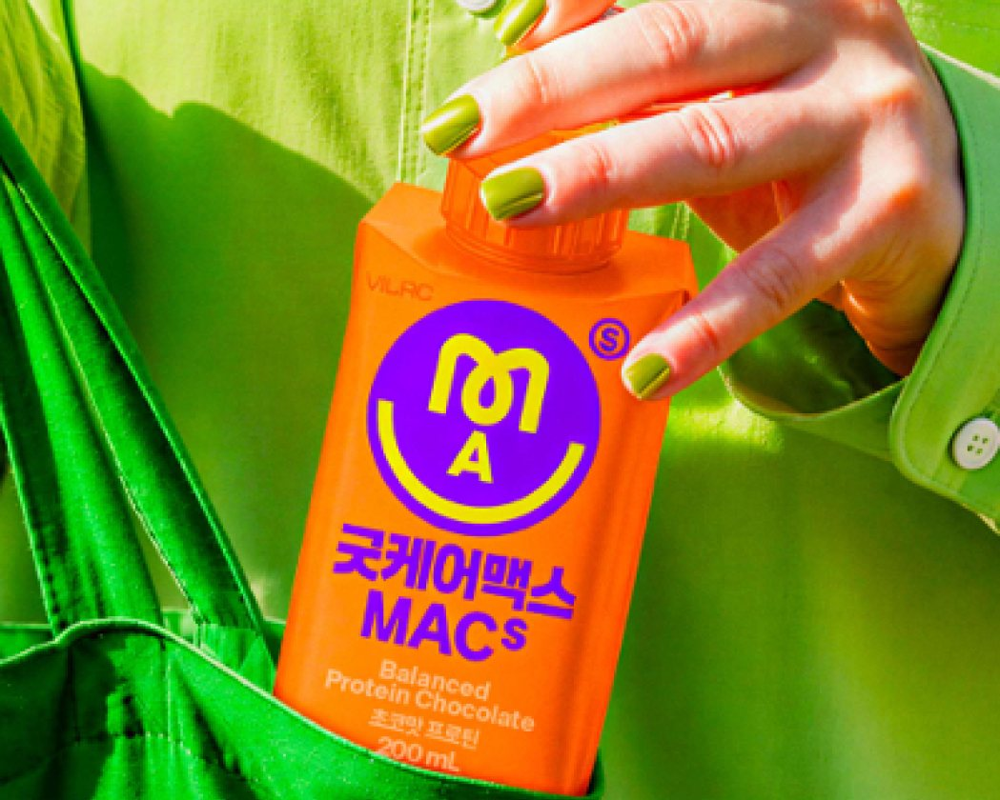
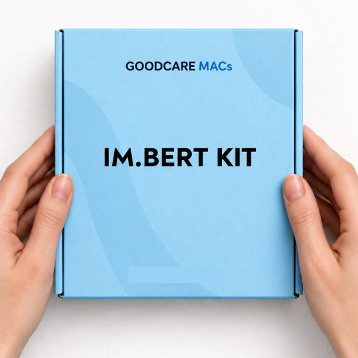
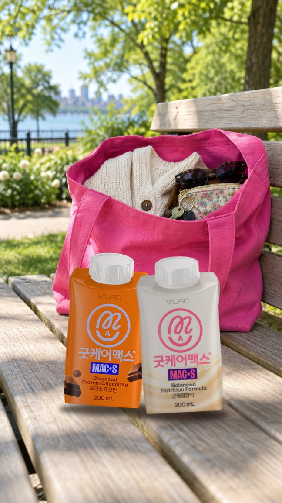
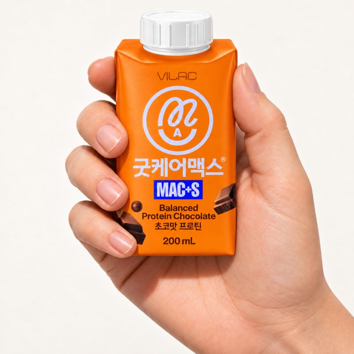
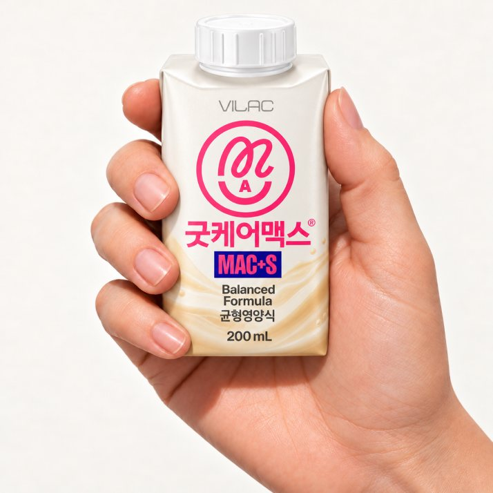
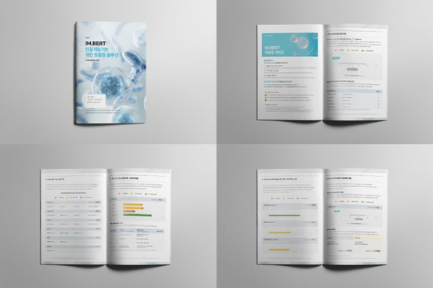

05우리의 약속우리가 말하는 것, 말하지 않는 것
우리가 말하는 것, 말하지 않는 것
원료에 대한 연구는 많지만, 원료의 연구 결과가 곧 제품의 효과는 아니에요.
그래서 굿케어맥스는 한 병에 무엇이 얼마나 들었는지를 정확히 알려드리는 데 집중해요. 식이섬유 12.5g, 사균체 100억 cells 이상, 락토프리. 확인되지 않은 효과는 약속하지 않을게요.
We feed you & your microbes
굿케어맥스는 칼로리는 넘치지만 장 속 미생물은 굶주린 요즘의 식탁을 위해,
사람의 세포를 위한 균형영양에 장 속 미생물의 밥, MAC을 더했습니다.
흰쌀·잡곡쌀·콩을 섞은 건강한 밥처럼 다섯 가지 식이섬유를 섞어 한 병에 12.5g을 채우고,
이뮤노바이옴의 AI 모델 IM.BERT와 함께 나에게 맞춘 1:1 이중영양까지 이어갑니다.
MAC은
사람은 소화하지 못하지만,
장 속 미생물은 먹을 수 있는 탄수화물이에요.
소화하지 못해요
맛있게 먹어요
굿케어맥스는
나를 위한 균형영양에 미생물을 위한 MAC을 더해
한 팩으로 두 번의 영양을 챙겨요.
2 : 4 : 4는
단쇄 2 · 중쇄 4 · 장쇄 4,
3가지 길이를 섞어 든든하게 설계했어요.

굿케어맥스만의
장 속 미생물까지 생각한 설계부터 근거 있는 원료,
하루 섭취 기준까지 꼼꼼하게 담았어요.
나의 몸을 위한 영양과 장 속 미생물을 위한 MAC을 한 팩에 함께 설계했어요.
식품의약품안전처가 기능성을 인정한 사균체 원료를 담았어요.
유익균이 만들어낸 성분까지 함께 담아 장 속 환경을 생각했어요.
기능성 유효성분을 하루에 얼마나 섭취하면 좋은지, 일섭취량 기준을 제시해요.







내 몸을 위한 영양만으로는 부족하니까
굿케어맥스는 장 속 미생물의 밥까지 한 팩에 담습니다.
분석에서 설계까지 이어지는 흐름으로
한 사람에게 맞춘 이중영양을 만듭니다.
검사 키트 수령부터 AI 리포트까지는 이뮤노바이옴이, 리포트를 바탕으로 한 이중영양 설계는 굿케어맥스가 맡습니다. 집에서 시작해 한 사람의 데이터로 끝까지 이어집니다.
굿케어맥스 2종은 비락 공식 스토어에서, IM.BERT KIT는 1:1 프리미엄 서비스로 만나실 수 있어요.
초코 프로틴 · 200mL
나를 위한 단백질 + 미생물을 위한 MAC

균형영양식 · 200mL
균형영양 + 미생물을 위한 MAC

집에서 하는 장내 미생물 검사
AI 리포트와 1:1 이중영양 설계

한 병에 담긴 이야기를 소비자 눈높이에 맞춰 다섯 편의 짧은 글로 옮겼어요.
원료에 대한 연구는 많지만, 원료의 연구 결과가 곧 제품의 효과는 아니에요.
그래서 굿케어맥스는 한 병에 무엇이 얼마나 들었는지를 정확히 알려드리는 데 집중해요. 식이섬유 12.5g, 사균체 100억 cells 이상, 락토프리. 확인되지 않은 효과는 약속하지 않을게요.
굿케어맥스에는 열처리한 유산균, 사균체 EF-2001이 들어 있어요. 살아 있는 균이 아니어서 상온에서도 안정적이고, 고온 살균 공정을 거쳐도 영향이 적어요.
한 병에 사균체 100억 cells 이상을 담았고, 이 수치는 원료사의 시험성적서(COA)로 확인해요.
식이섬유를 많이 넣으면 텁텁해지거나 가라앉기 쉬워요. 치커리 이눌린은 약 3%일 때 가장 크리미한 식감을 내고, 프락토올리고당은 은은한 단맛을 더해요.
폴리덱스트로스는 열과 산에 강해 살균 과정을 거쳐도 안정적이고, 난소화성말토덱스트린은 맛이 없고 잘 녹아 가볍게 넘어가요. 여기에 오트와 그린바나나로 고소한 풍미를 더했어요.
식이섬유는 종류마다 장 속에서 발효되는 속도가 달라요. 이눌린과 올리고당은 빠르게, 구아검가수분해물은 완만하게, 폴리덱스트로스와 난소화성말토덱스트린은 천천히 발효돼요.
그래서 한 가지 원료를 많이 넣는 대신, 속도가 다른 다섯 가지를 고르게 섞어 12.5g을 채웠어요. 흰쌀·잡곡쌀·콩을 섞어 짓는 밥처럼요.
식이섬유는 사람의 소화효소로는 분해되지 않아요. 입과 위, 소장을 그대로 지나 대장까지 도착하고, 그곳에서 장 속 미생물이 먹을 수 있는 ‘밥’이 돼요.
굿케어맥스가 MAC을 ‘장 속 미생물의 밥’이라고 부르는 이유예요. 한 병에는 이런 식이섬유가 12.5g, 하루 영양성분 기준치(25g)의 절반만큼 들어 있어요.
칼럼 속 원료 이야기는 원료에 대한 일반적인 설명이며, 굿케어맥스 제품의 효능·효과를 뜻하지 않아요.